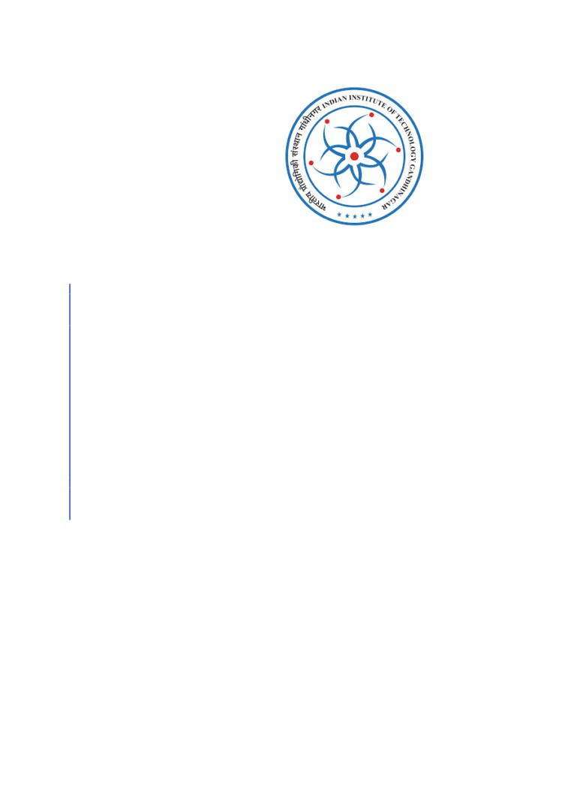
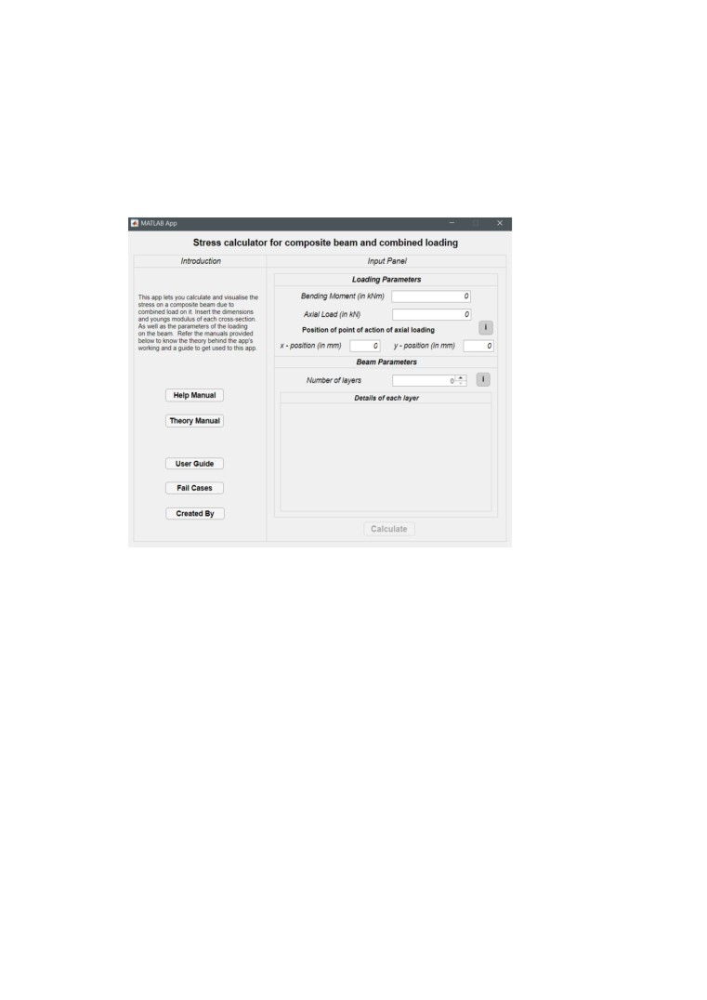
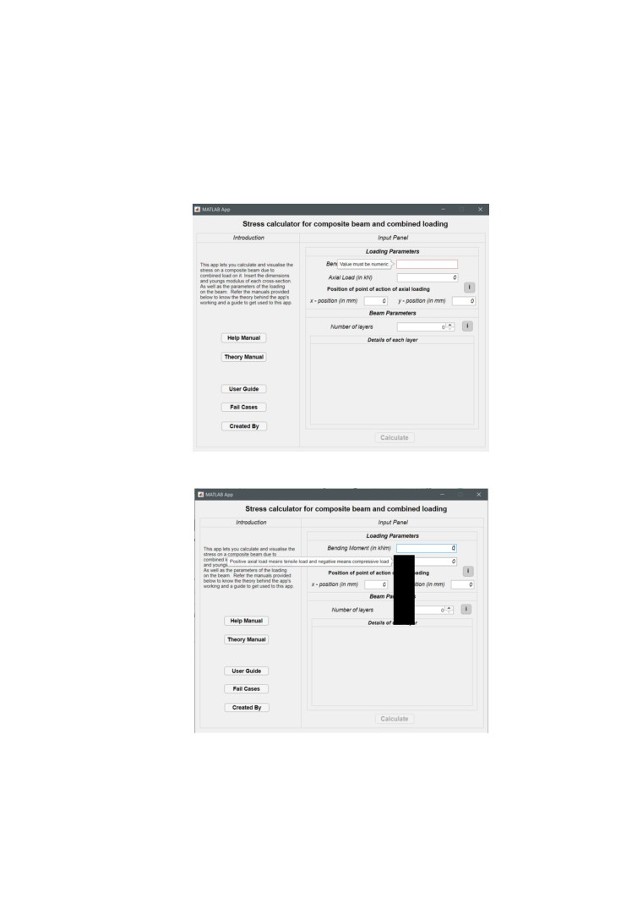

Indian Institute of Technology Gandhinagar
Stress Calculator for
Composite Beam and
Combined Loading
USER MANUAL
Abstract
Stress Calculator allows the user to calculate and
visualize the stress on a composite beam subjected
to combined loading.
Author: -
Vijendra Meena
Date: -
12-3-2020

It is a …
This manual provides a user with a detailed walkthrough of the application.
After the installation of the application, the onboarding or home screen that displays is shown
below.
1. Left section of the Onboarding Displays
1.1 Introduction: - A brief description and walkthrough of the app are given.
This application allows the user to calculate and visualise the stresses on a composite
beam, subjected to combined loading. This application only allows the user to
calculate the stress in the scenarios of pure bending and eccentric loading (Bending
Moment + Axial Load). This application does not account the effect of shear loading.
1.2 Theory Manual: - This literature provided the detailed theory or concepts of the
pure bending, eccentric loading and composite beams. All the assumption used to
reach the conclusive equations are discussed. Step-by-step procedure to attempt a
problem is given. It also briefly explains the concept of centroid and second moment
of Area. The centroid and second moment of area of rectangular cross-section, I
cross-section and T cross-section are also discussed.
1.3 Help Manual: - This write-up provides the data dictionary i.e. terminology
definition of the variables or parameter used in coding and application output. The
sign convention used in the application are provided. The dimensional parameters of
cross-sections (rectangular, I and T cross-section) are explained. The limitations of
the application are mentioned. The selected data of elasticity of modulus is provided.
1.4 User Guide: - This manual provides the detailed walkthrough of the application.
Step-by step procedure to use the stress calculator is given.

1.5 Fail Cases: -
1.6 Created By: - In this, role description of app developer and contributors (i.e. coder,
visualiser, technical writer and content integrator.) are mentioned.
2 Input Panel
User have to input the data in the marked boxes corresponding to each parameter in
the input panel. By default, the input data for all the parameter is zero and user have to
update it. If the user erases the data, it displays the pop-up ‘Value must be numeric.’
On placing the pointer on the input box of the corresponding parameter, a pop-
up window with the sign convention for that parameter appears.
I
In order to calculate the stress distribution, user had to specify the beam parameter
and the loading parameter. The load parameters are bending moment, axial load and the
position of the application of axial load. Depending of the type of loading, the user has to
input the data corresponding to that parameter. In the beam parameter, first user has to
specify the number of layers i.e. the number of different materials in the cross-section.
After specifying the number of layers, user have to select the type of cross-section and
corresponding dimensions for each layer.
After provide all the required input data, user can estimate stress using the ‘calculate’
command. The output panel consists of original cross-section, transformed cross-section
and stress distribution curve.
2.1 Loading Parameter
2.1.1 Bending Moment: It is the reaction induced in a structural element when an
external force or moment is applied to the element, causing the element to
bend. The input data should be in the unit of kNm (kilonewton-metre). The
bending moment along the positive z axis is considered positive.
2.1.2 Axial Load: - The axial load is a force directed along the line of axis of that
member. The input data should be in the unit of kN (kilonewton). The positive
axial load mean that nature of load is tensile and negative axial load mean the
nature of loading is compressive.
2.1.3 Position of the point of action of axial loading: - The spatial co-ordinates of
the position of action of axial load are given with respect to the centroid of the
original cross section. The input data should be in the unit of mm (Millimetre).
The tab “i” (corresponding to the position of point of action of axial loading)
provide the hint about the axial load positioning.
2.2 Beam Parameter
2.2.1 Number of layers: - The user has to specify whether he or she is examining a
single layer cross section (i.e. rectangular, I or T cross-section) or a multiple
layer cross-section (i.e. combination of rectangular, I or T). For single layer
cross section user have to input number of layers as 1 and in case of multilayer
cross-section he or she has to specify the number of different layers.
The application limitation as
• Linear elastic Domain
• Homogeneous
• isotropic
• straight beam
• At least one plane of symmetry.
• Constant bending moment
• Rectangular, I-cross section & T-cross section or the combination of them